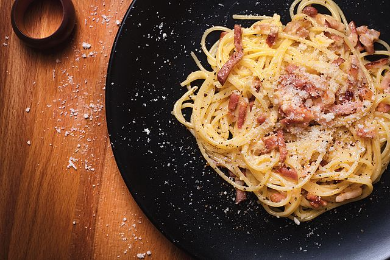

Quick and Dirty Garbage Carbonara

The Goods on the Bads
Pasta Carbonara is a delicious and comforting dish that can be whipped up on whim. There's very little to it, but rather than using the exotic ingredient guanciale (exotic to me, a lowly North American plebian anyhow) I use the far more available,
and thusly easily procured, bacon.
Now almost any italian will probably have already closed this webpage in disgust, and they may be right to do so, but I'm going to be straight up with you- this is probably the only thing I can make, and make well. You could use pancetta instead of
guanciale, but my personal preference leans towards that down-home-smokey flavor, just like my mom used to make.
With a bit of practice, you can make this recipe in as little as 20 minutes. You need a pot, a frying pan, and a cheese grater for this. You don't even really need to prep anything if you get your timing right, that being said -this is not a recipe
that lends itself well to leftovers so I recommend only making as much as you can eat.
Ingredients
- 8 oz pasta, ideally a spaghetti, linguine, or fettucine
- 2-3 slices of bacon, ideally high quality, smoked bacon- cut to your liking or diced
- 1 tbsp salt for the pasta water
- 1/2 cup grated parmasean cheese
- 2 egg yolks, 1 whole egg
- ground pepper to taste
How you make this work
- In a frying pan on mid low heat begin cooking your bacon
- At the same time, heat 8 oz of pasta in a pot of boiling water to al dente (usually takes 7-10 minutes depending on the pasta you use)
- While waiting for the pasta and bacon, grate your cheese, take your egg yolks, and whites, and whisk vigrously in a bowl until the cheese has been envolped entirely by the eggs.
- Add 1 tbsp pasta water to the egg/cheese mix, stirring while adding it in.
- When the pasta has cooked fully, the bacon should now be ready; lower the heat down to mid-low/min and add the pasta to the pan.
- Slowly add the egg/yolk mix to the pan, stirring the pasta, bacon, and sauce while doing so. You may need to add more pasta water to the pan in order for the sauce to bind properly, but it's important to do so over a low heat, because if the eggs
heat to fast they will curdle and you won't be eating a pasta sauce.
- Once all the parts have mixed, you can plate and top with pepper if you want.
Buono Appetito